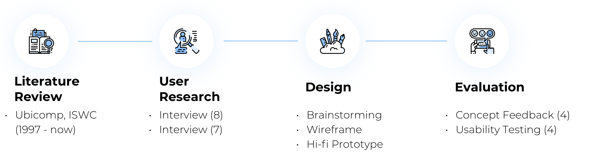
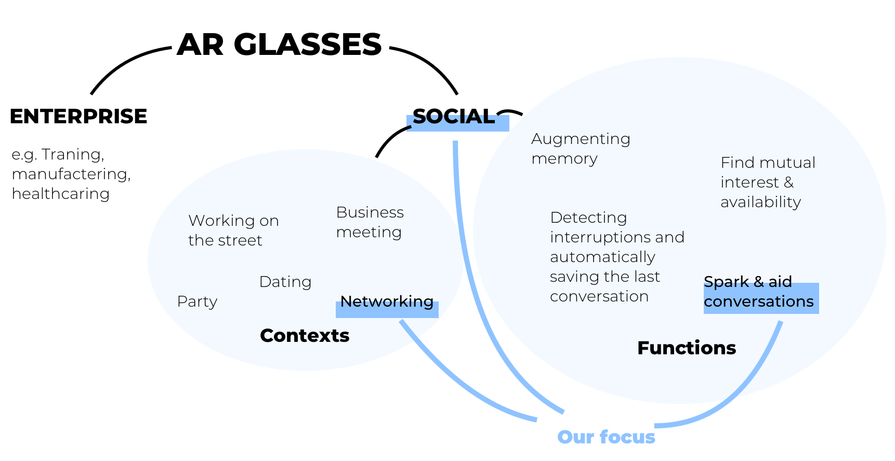
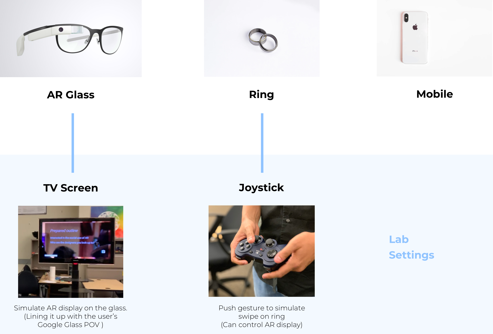
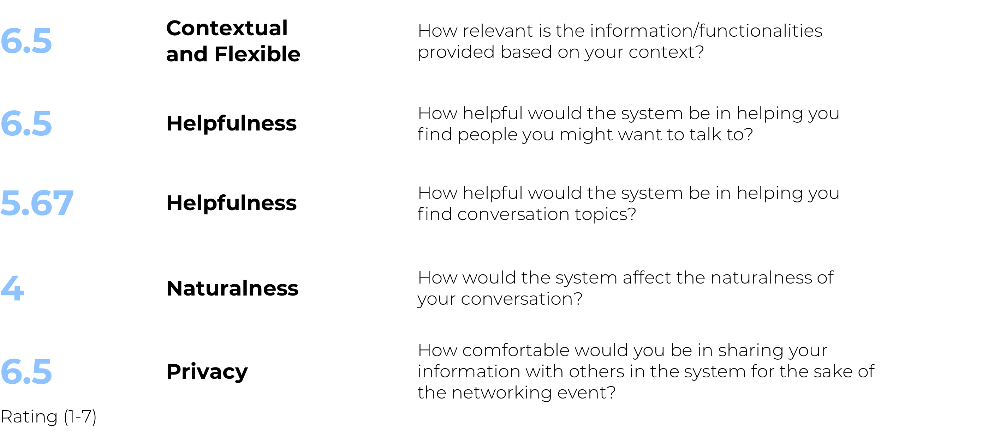

OVERVIEW
| ROLE | UX Designer. UX Researcher |
| with Tony Jin. Joshua Yao. Suyash Thakare | |
| mentored by Thad Starner. | |
| DURATION | Jan 2019 - May 2019 |
| TAG | AR Glass. Social. |
| TOOL | Sketch. Figma. InVision Studio. Final Cut Pro. |
What's the problem?
Imagine a scenario when you just arrive at a networking event, many people are there and you don’t know who is the best person to talk to. Or you start the conversation, but during the conversation, sometimes you have a moment of awkward silence, you don’t know what other topics you can talk to. So our target is
Help people connect with the right people, and spark meaningful conversations.
Process
RESEARCH
For AR glasses, the main and mature use case is enterprise AR (e.g. training or manufacturing), but social interaction is still an empty space. So we looked through all papers from 1997 till now which published on Ubicomp and ISWC conferences. And after the first round of literature review and user research, we narrowed down the context to networking events. And after the second round of research, we dove deeper to identify user needs and summarize design principles.
Why social constexts is hard? - Naturalness
“The most profound technologies are those that disappear. They weave themselves into the fabric of everyday life until they are indistinguishable from it.” - Mark Weiser.
Social conversation is highly dynamic compared to preset information in the enterprise. As contextual information will be provided directly in front of our eyes, it’s easy to distract people from normal conversations.
Why we chose networking event? - Privacy
Privacy is a big concern for social interactions. One insight from the user research is that ‘people often feel uncomfortable if someone browses their profile in front of them’. Compared to a casual party, the networking context is the one people are more willing to share their personal information and need access to more information.
DESIGN ITERATIONS
Design principles
Based on our research, following are top design principles:

How to be unobstrusive?
“Provide value when and where we need it and disappear at other times.”
When the screen is active, it will distract users from maintaining a natural converstaion. So when users already noticed our recommendations, can the information recede to the background? That's why later we decided, once Google Glass inactive 1 min, it will start sleeping mode.
Before
Show recommendations all the time.
After
Google Glass will sleep if inactive 1 min.
It's hard to people to multitask reading news on screen during the conversation.
Technology can recommend tons of topics they can talk about during a conversation. Even we try to simplify the interface, can they maintain a natural conversation when reading new information? That's why we decided, when users choose to talk to this person, they can quickly create an outline on phone and select what information will show up on the glass later. So users will have expectations of what will be recommended during the conversation.
Before
Get recommend news directly on AR glasses.
After
Able to create an outline on the phone first.
How to balance technology constraints?
When users are doing explorations, we’ll generate a list of people who have more common points with you. But how to display recommend people? We presented the following two options to users:
Overlay Dots on People's Faces
List of People Around You
Users like the 1st option. It’s really intuitive. However, facial recognition requires strong battery capabilities. The Glass currently even generates a large amount of heat when used during long durations. On the contrary, the 2nd option requires more cognitive effort. But currently there’s already several technologies available: triangulation, RFID, or ultrasound beacons. So finally we decide to provide the 2nd option. And when battery issues solved in the future, we can leverage the 1st option.
What if...?
What if someone on your people list leaves the event?
One idea we had at the beginning was to remove from the list when someone already left. But imagine a scenario when you add Rebecca on your people list before. When you finish talking to Bob, you want to find Rebecca. But you cannot find Rebecca anymore. You’ll be a little bit confused: do I remember wrong?
So we decided to keep Rebecca on the list, but put grey and add one sentence to indicate leaving.
What if the facial recognition failed?
When talking to someone, instead of showing recommend topics directly, users need to confirm that the persons in front of you is the person Glass recognizes.
USABILITY TESTING
How to set up usability testing?
Our final deliverables include interactive prototype on AR glasses, additional gesture design to control interactive prototype through ring, and a mobile interactive prototype. One of the main challenges we had was unable to implement. But we still need to validate gestures. So we used the following mapping to simulate the actual environment. We used Invision Studio to build our AR interactive prototype and Invision to build mobile prototype. We also used Wizard of Oz to provide manual notifications.
Findings of usability testing
We conducted task-based usability testing which includes 6 major tasks in our system with a think-aloud method. After users completed all tasks, they completed a quantitative questionnaire based on 5 design principles we established. Following are the average score from 4 participants:
FINAL DESIGN
For final design, we followed material design and Google Glass design principles.
"I want to find a person on my list to talk to"
"I want to meet new people"
"Seeing someone interesting, I want to strike up a conversation"
"I want to find some topics to talk"
NEXT STEPS
How to seamlessly transit between multiple devices, such as from AR to mobile and back?
"I didn’t see the option (on the glass) from one person’s profile to add an outline on the phone" (P2) There’s transfer cognition from glass to mobile. Users lack awareness of mobile usage when they are using AR glasses.
How would social behavior change when everyone has AR access to everyone’s profiles?
"Knowing he knows something about me may change our flow of conversation." (P2)
How to help users understand the hierarchy within wearable devices?
"I’m not sure filter is in the exploration mode". "I don’t think the direction is inside" (P1, P2, P3, P4) Not only for AR glasses, for other devices with small screens like smartwatch, users all need more context information of where they are and what interactions offered on the page like clicking.
WHAT I LEARNED
How to balance between technical constraint and design capability?
As our target is to design the present use and future use of AR devices under social contexts, we need to consider technical alternatives. It’s a hard decision for any envision projects, of whether to consider the technical constraints or not.
Hardware interaction design instead of pure interface design
Unlike mobile or web design, which mature design guidelines exist, the amount of work done in this space is not as extensive, especially for wearable AR. We thought thoroughly about the hardware interaction design. It’s challenging, we had about 30+ debates during our design phases, but at the same time, definitely interesting!
Different process for hardware envisioning projects.
For envision projects, user research is not so useful at the beginning. Instead, the literature review can provide many insights into what research area has been done and findings from that. So we went through ALL Ubicomp and ISWC papers from 1997 - now (50+) and summarized great insights. From that, we conducted user research to verify our hypothesis and user needs. Another main difference is the design process. Instead of trying to push limits for one iteration, quickly design and iterate are needed.
In the end, great thanks to our mentor, Thad Starner, who served as an inspiration for this project and provided us with a plethora of ideas and feedback in our weekly meetings. Also, I want to thank my 3 awesome teammates - we collaborated really well and conducted all the plans, research and design together which leads to the awesome deliverables!